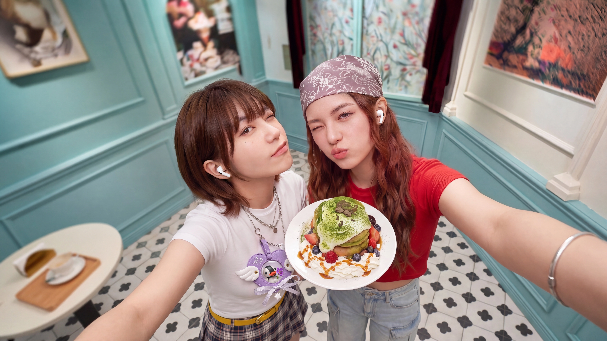
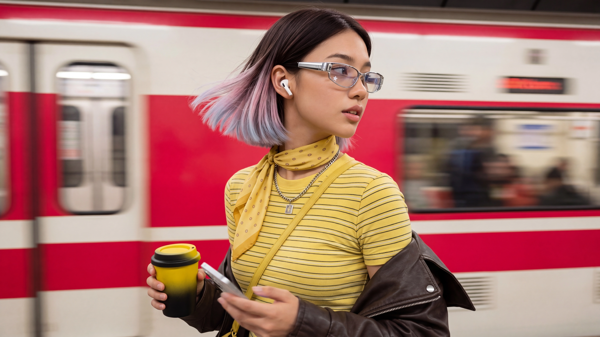

OPPO AI Image Refinement
A private review set showing how AI-assisted refinement was used to improve campaign visuals from original generation/output frames into higher-resolution final images with cleaner faces, stronger environment detail, and more polished commercial presentation.


Campaign Scenes
Each pair keeps the scene direction visible while showing the final AI-enhanced output beside the original image. The comparison is designed for quick client review: left is the source image, right is the final optimized visual.


Face-Level Quality Check
Drag the center line to compare the source and final images at a closer face-level crop. This is used to review skin transitions, eye detail, hair edges, and facial structure after the AI upscale pass.
Subway Scene Detail
A closer crop around the subject's face and glasses shows how the final image cleans up facial detail, hair edges, and the surrounding motion-blur environment.


Low Latency Gaming Detail
This crop checks practical presentation detail around the face, hair, earbud, hands, and phone area, where upscale quality is most visible in a client review.